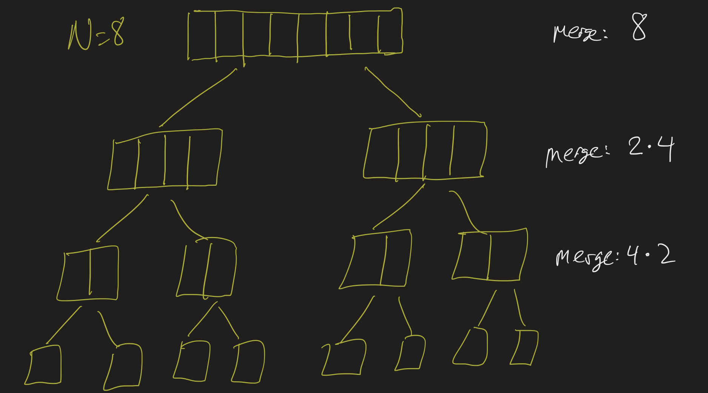

CS2 Lesson 21
Professor Abdul-Quader
Merge Sort
Demos
Questions?
- Sorting Algorithms?
- Merge Sort?
Announcements
- Exam 3: next Thursday! Bring one page of notes.
- Project 4: will be assigned next Monday, due Monday, May 12
- Problem Set involving questions about Big Oh / running time.
- Final Exam May 8 (12 - 2:30 PM)
Sorting
- Previously seen: Bubble Sort, Selection Sort
- Both are \(O(n^2)\).
- Are all sorting algorithms \(O(n^2)\)?
Recursion
There are several options; most involve divide-and-conquer algorithms. Divide-and-conquer means we split the list into smaller parts, and (recursively) sort these smaller lists. There are several ways to do this, we will describe one: the merge sort algorithm.
Merge sort
- Split the list in half.
- (Recursively) merge sort each half.
- Merge the two halves to produce one, sorted list.
Pseudocode?
- Just focus on the merge part.
- Pseudocode for merging two sorted halves?
- Running time?
Exercise
Implement the merge algorithm. Recall: given an array, sorted from \([start, mid)\) and \([mid, end)\):
- Put them in order in \(tmp\) (from start to end).
- Then copy back from \(tmp\) to \(array\).
Testing
Starter code Make sure your method
works by testing the code with the testMerge method.
Mergesort pseudocode
Again: the merge sort algorithm works as follows:
- Split the list in half.
- Recursively merge sort each list.
- Merge the two halves.
Exercise
On paper: write pseudocode for the merge sort algorithm. (No need to
re-write the merge method.)
Exercise
Implement the mergesort algorithm. Then make sure your method works
by testing the code with the testSort method.
Running time
- Suppose \(T(n)\) is the number of steps the merge sort algorithm takes on a list of size \(n\). Then notice: \[T(n) = 2T(n/2) + O(n).\]
- Simplify: \(T(n) = 2T(n/2) + n\).
- Can we find a formula for \(T(n)\)? Or at least its “Big Oh”?
Example
\(n = 8\):

- How many steps spent merging at each “level”?
- How many “levels”?
- Running time?
Details
- \(T(8) = 2T(4) + 8\)
- \(= 2(2T(2) + 4) + 8\)
- \(= 4T(2) + 8 + 8\)
- \(= 4(2T(1) + 2) + 8 + 8\)
- \(= 8T(1) + 8 + 8 + 8\)
- \(= 8T(1) + 3 \times 8\).
Notice: \(T(1)\) (the base case) is \(O(1)\), and if \(n = 8\), then \(3 = \log_2{8}\).
Code
- In the code, let’s see if we can add a way to “count” the amount of merging that is done.
- Each call to
mergeshould take roughly(end - start)steps.
In general
- In general, if \(N = 2^k\):
- \(k\) “levels” of splitting
- Each “level” does \(N\) steps of merging in total.
- \(k \times N\) steps total!
- \(k = \log_2(N)\), so…
- \(O(N \log(N))\) steps total.
Project 3
Questions?
Whose turn?
Pseudocode for the game:
currentPlayer = one;
while (game is not over) {
print "The board currently looks like (blah)"
print "Player ???, make a move"
row = currentPlayer.chooseRow(board)
stones = currentPlayer.chooseStones(board, row)
update board
if (currentPlayer == one) {
currentPlayer = two;
} else {
currentPlayer = one;
}
}Solution: Modular design
- If
current == one, return “Player One”, otherwise return “Player Two” - play method:
print(playerName(currentPlayer) + ": make a move");
Determine winner
After loop:
- Determine winner: who took the last turn?
- Is it the currentPlayer?
- Depends on when you do the “swap turn” part.
- Test out your game. See if it gives the correct answer.
Data structures
- A data structure is a way of organizing data in memory. We have seen two important kinds of data structures already: arrays and ArrayList.
- A linked list is another kind of list structure.
Linked List

- Data organized into nodes.
- Each node has a data item and a link to the next node.
- Last node links to
null.
Upcoming
- No more async lessons / small groups
- Sign up for a demo (Monday or the following monday) if you haven’t!
- Exam 3 on Thursday
- Unrelated: RSVP for the Math/CS alumni reunion (May 3 2-3:30 PM).